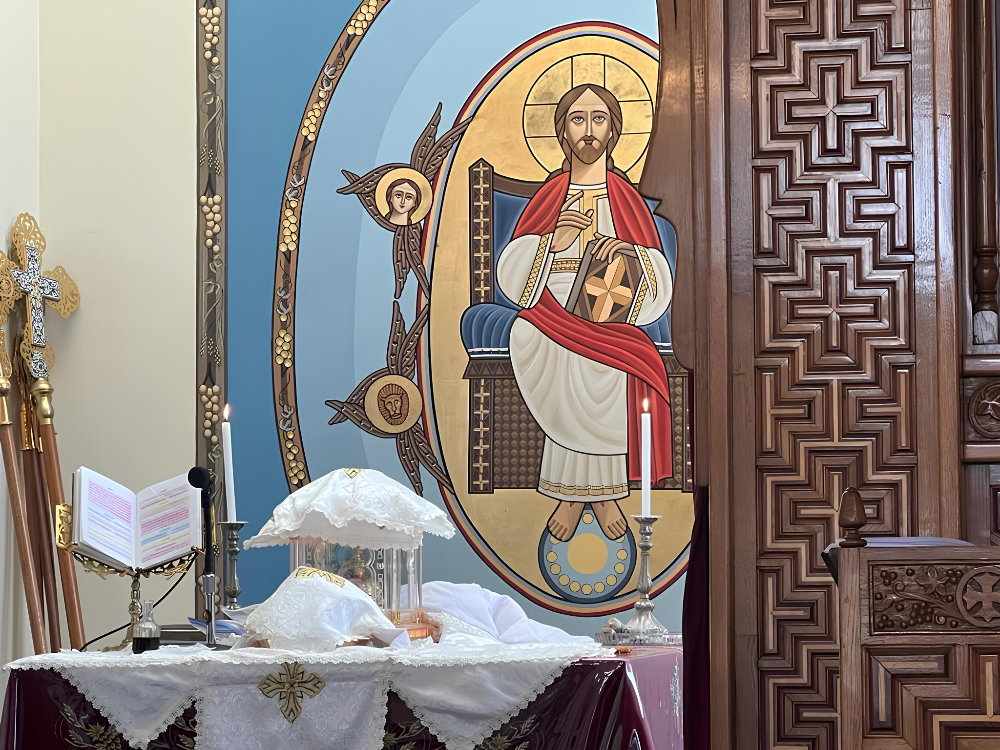

INTRODUÇÃO
A Igreja Copta Ortodoxa desempenhou um papel importante nos três primeiros Concílios Ecumênicos, que se reuniram para pôr fim as heresias, para formular os credos e doutrinas ortodoxos, e pós-estatais, e para documentar os cânones apostólicos da Igreja. Após o Concílio de Calcedônia, os imperadores de Constantinopla ordenaram o encerramento da Escola, como parte de sua perseguição aos cristãos egípcios. No entanto, a Igreja Copta simplesmente transferiu sua Escola para o Mosteiro de São Macário no deserto de Wadi elNatroun. Então, em 1893, o Colégio Teológico da Escola Catequética de Alexandria foi refundado e hoje possui campus no Cairo, Nova Jersey e Los Angeles.
As cartas e escritos do Papa Kyrillos circularam por todo o mundo cristão, edificando e emocionando os crentes ortodoxos. E embora ele não tenha especificamente mencionado Nestório pelo nome, nem feito qualquer alusão ao que estava acontecendo em Constantinopla, a ira de Nestório foi, no entanto, muito despertada. Ele deu expressão a esta raiva escrevendo uma carta pessoal ao sucessor de São Marcos, repreendendo-o por sua franqueza contra ele. O Papa Alexandrino apressou-se em responder-lhe. Não era contra ele como pessoa que ele havia falado. Em vez disso, ele estava cumprindo seu dever como assumindo a responsabilidade de conduzir seu rebanho no caminho certo. Ele então expôs a Doutrina Ortodoxa a Nestório, disse-lhe para pesquisar nas Escrituras onde encontraria apoio claramente e depois instou-o a parar de promulgar uma ideia que era equivalente a blasfêmia.
Ele então acrescentou: "...você não tem poder para lutar contra Deus Quem foi crucificado por nós na verdade; e morreu no corpo, embora viva continuamente no poder de Sua Divindade; é Ele quem está sentado à direita do Pai enquanto os anjos, principados e potestades o adoram.” A correspondência entre Kyrillos e Nestório continuou por algum tempo com o Papa Kyrillos tentando com todo o poder de sua eloquência e lógica convencer Nestório de sua saída da Ortodoxia, e Nestório recusando-se obstinadamente a ser convencido ou a admitir que ele havia caído em um modo de pensar herético. Desenvolveu-se uma situação que foi algo semelhante ao que se desenvolveu entre Atanásio e Ário e o Papa Kyrillos foi igualmente capaz de lidar com isso e igualmente cheio de fé e zelo ardente em sua posição tenaz contra Nestório como Atanásio havia sido contra Ário. É assim e por que a fé ortodoxa foi preservada em sua integridade e o Credo Niceno permaneceu intacto e ambos foram transmitidos à posteridade como um precioso legado que todas as Igrejas Ortodoxas Orientais e algumas Igrejas Cristãs Ocidentais ainda respeitam e aderem como os fundamentos básicos de sua fé.
O primeiro Concílio Alexandrino
Uma das primeiras coisas que o Papa Kyrillos fez depois de obter respostas negativas às cartas que enviou a Nestório foi convocar um concílio em Alexandria dos bispos e chefes de sua própria Sé e discutir com eles estas cartas. Neste concílio os padres reafirmaram o Credo Niceno e aprovaram uma introdução, que Kyrillos havia escrito, sugerindo que fosse prefixado ao Credo. Até hoje os coptas recitam esta introdução como uma introdução preliminar de declaração ao testemunho de sua fé. A introdução diz "NÓS TE MAGNIFICAMOS, ó MÃE DA VERDADEIRA LUZ, E GLORIFICAMOS A TI, Ó VIRGEM SANTA. POR VOCÊ DEU À LUZ O SALVADOR DA HUMANIDADE QUE VEIO E NOS RESGATOU E SALVOU NOSSAS ALMAS. GLÓRIA A TI, Ó SENHOR JESUS CRISTO, ORGULHO DOS APÓSTOLOS, A COROA DOS MÁRTIRES, A ALEGRIA DOS JUSTO, A FIRMEZA DAS IGREJAS, O PERDÃO DOS PECADOS…”
Além de convocar o concílio de Alexandria, Abba Kyrillos também escreveu uma série de cartas aos chefes de outras igrejas (bispo de Antioquia, bispo de Jerusalém, bispo de Roma, bispo de Alepo). A carta enviada teve resposta imediata, elogiando seus esforços e ficaram do lado dele. Ao receber a resposta de Celestino, bispo de Roma, Kyrillos fez duas coisas. Por um lado, querendo envolver a família imperial na ajuda a pôr fim à polêmica, ele escreveu cartas ao Imperador, à Imperatriz e as três irmãs do Imperador. A carta ao Imperador, especialmente, era longa e detalhada. Ele explicou para ele o desvio sutil da Ortodoxia no conceito Nestoriano, e apelou a ele para tentar convencer Nestório de seu erro. Nas cartas à Imperatriz e às irmãs do Imperador, ele exortou-as a usarem a sua influência para preservar a Ortodoxia e acrescentou no final uma lista dos versículos do Antigo e Novos Testamentos que falam de Cristo como Deus encarnado, em Quem não há separação nem divisão. Por outro lado, Kyrillos convocou um segundo concílio em Alexandria.
O segundo Concílio Alexandrino
Este segundo concílio Alexandrino resolveu novamente tentar convencer Nestório de seu erro. Decidiu-se escrever-lhe outra carta, cuja primeira parte seria uma exposição do Credo Niceno, e a segunda parte uma afirmação da verdadeira fé, seguido por doze anátemas. É assim que se lê. “Em conformidade com a fé dos pais, declaramos que o Logos único de Deus encarnou da Virgem. Fez esta carne Sua, submetendo-Se ao nascimento humano, saiu do ventre da Virgem ainda criança, sem deixar de ser o que é e permanecendo no corpo como Ele é, ou seja, o Verdadeiro Deus por natureza. A carne não foi mudada na natureza do divino, assim como o Logos divino não foi transformado na natureza da carne pois Ela não foi submetida a nenhuma mudança.
Sendo ainda criança, e mesmo estando no ventre de Sua Mãe, o Logos encheu o mundo inteiro, Ele o governou conjuntamente com Seu Pai e o Espírito Santo, pois a divindade não conhece limites. O Logos está unido à carne hipostaticamente. Cremos, portanto, num único Filho e Senhor, Jesus Cristo; nós não separamos o homem de Deus; não acreditamos que Ele esteja simplesmente unido sob a aparência de dignidade e poder; estas são palavras novas, estranhas à fé. Se nós também dissermos, como fez São Paulo em Colossenses 2:9, que em Cristo habita toda a plenitude da Divindade corporalmente, vemos que Deus não habita Nele como Ele habita em Seus santos. Mas que o divino e o humano estavam unidos em nosso Senhor Jesus Cristo da maneira que a alma está unida ao corpo no ser humano.
Há, portanto, um só Cristo, um só Filho, um só Senhor." Se ele fosse realmente "ortodoxo", como afirmava, Nestório foi convidado a provar isso assinando a carta e o anátema. Assim ele se justificaria e esclareceria sua atitude diante de todos os crentes”. Os mensageiros que traziam esta carta traziam simultaneamente duas outras cartas cirilianas: uma aos sacerdotes, aos diáconos e ao povo de Constantinopla, e a outra aos monges dessa mesma cidade. Nestório não só recusou a sua assinatura, mas também fez todos os esforços para antagonizar o Imperador contra Kyrillos. Seus esforços tiveram sucesso, pelo menos temporariamente, pois que Teodósio escreveu ao Prelado Alexandrino pedindo-lhe que cedesse à sua atitude para com Nestório para evitar as consequências de sua ira.

O Concílio Ecumênico
1. Introdução
Além disso, a controvérsia nestoriana já envolvera muita gente e suscitaram tanta reação entre os altos e os humildes que apenas uma carta imperial carregando uma ameaça a Abba Kyrillos não conseguiu resolver o problema. A ação mais decisiva em escala ecumênica tinha que ser levada, e o próprio Imperador percebeu isso. Quando, portanto, o povo da própria Constantinopla instou-o a convocar um concílio de todos os bispos para tratar deste assunto, ele respondeu ao seu apelo e enviou um convite aos bispos de todas as igrejas. Eles deveriam assistir à sua reunião na cidade de Éfeso, em junho do ano 431 DC.
O Papa Kyrillos foi convidado com base na autoridade da sua própria dignidade, mas as atitudes do Imperador e de Nestório em relação a ele não foram mudados. Assim que Abba Kyrillos recebeu o convite do Imperador, ele fez planos para navegar para Éfeso, levou consigo uma forte delegação de eclesiásticos coptas que incluía seu notável contemporâneo Abba Shenouda de Akhmim. À medida que se aproximava a data fixada para o concílio, os bispos gradualmente apareceram: duzentos deles se apressaram em se levantar e mais uma vez defender a fé e provar que realmente eram os dignos sucessores dos Padres Nicenos. Nestório chegou a Éfeso como um homem que ia para uma batalha, cercado por quarenta guerrilheiros e um grande número de homens armados. Um de seus companheiros foi Irineu, um influente nobre de Constantinopla. Além disso, Candidiano, o comissário imperial representando o Imperador Teodósio no cocílio, renunciou à sua neutralidade e permaneceu por Nestório, embora ele tivesse sido encarregado apenas de garantir que a ordem prevalecesse.
Em vez de manter a sua estrita imparcialidade, porém, permitiu que as suas tropas permanecessem sentinelas em volta da casa de Nestório. Enquanto isso, João de Antioquia demorou a chegar. No dia de Pentecostes, um dia antes da data marcada para a abertura do concílio, ele enviou uma carta a Abba Kyrillos, desculpando seu atraso devido à longa viagem e à morte de alguns de seus cavalos, e afirmando sua chegada dentro de cinco ou seis dias. Durante este tempo chegaram dois dos bispos de João e declararam enfaticamente que havia ordenado que dissessem que a abertura do concílio não deveria ser adiado por causa dele, e que os dignitários reunidos deveriam seguir em frente e fazer o que considerassem melhor.
Os pais concluíram que ele era relutante em participar de um concílio onde seu amigo seria questionado, e eles decidiram iniciar suas sessões. Isto foi no dia 22 de junho na igreja da " Mãe de Deus" em Éfeso. Depois de estabelecer a ordem das reuniões e eleger Kyrillos para presidi-las, enviaram uma tripla intimação a Nestório, em obediência ao direito canônico. Nestório decidiu no entanto, desconsiderar essa convocação e recusou-se a comparecer às reuniões. Diante de sua recusa obstinada, o concílio reuniu-se sem ele.
2. As sessões
a. Primeira Sessão
Na sessão inaugural, Juvenal de Jerusalém solicitou que começassem com a leitura do Credo declarando que era a base sobre a qual construir todas as suas discussões, bem como seu julgamento final. Então, Pedro, um sacerdote de Alexandria e notário-chefe do concílio, leu o Credo. Ele seguiu a isso lendo as duas últimas cartas trocadas entre Kyrillos e Nestório. A carta de Abba Kyrillos, ao final dos quais estavam os doze anátemas e a resposta de Nestório para isso. Esta primeira sessão do concílio durou todo o dia e até altas horas da noite. Os membros debateram todos os detalhes do caso para o qual se reuniram e depois proferiram a sentença de excomunhão, degradação e deposição sobre Nestório. Abba Kyrillos, ciente do que seus oponentes eram capazes, teve a ata registrada com cuidado meticuloso. Abba Kyrillos escreveu imediatamente ao clero e ao povo da igreja de Constantinopla informando-os sobre os procedimentos do concílio. Ele também pregou dois sermões na igreja da Mãe de Deus, ambos centrados em torno da união perfeita da divindade de Cristo com a Sua humanidade; e sobre Maria, que é virgem e mãe ao mesmo tempo.
b. Segunda Sessão
Poucos dias depois da primeira sessão do concílio de Éfeso, João de Antioquia chegou com trinta e dois de seus bispos. Ao se aproximarem da cidade, Candidiano e Nestório enviaram-lhe uma escolta de soldados para encontrá-los, aparentemente para homenageá-los, mas de fato real para barrar o caminho aos delegados do concílio, que foram obrigados a seguir por perto até que João chegou ao seu alojamento, e ficaram no portão duas horas para ser recebido por apenas alguns minutos pelo bispo João. Eles voltaram e relataram o seu tratamento ao concílio, que realizou uma sessão imediata, e cuidadosamente anotou tudo o que havia acontecido. Em conformidade com os seus partidários nestorianos, João realizou um conventículo de quarenta e três bispos sob sua própria presidência. Eles acusaram Abba Kyrillos e Memnon, bispo de Éfeso, de ter se apressado em abrir as sessões em vez de esperar eles. Então, depois de fazerem suas próprias deliberações sobre os doze anátemas apresentados pelo Papa Alexandrino, decidiram depô-lo juntamente com Memnon.
Candidiano então tentou levantar um novo bispo para Éfeso, mas a população ficou tão excitada que teve que renunciar a isso, embora ordenasse que suas tropas os derrotassem. Não conseguindo impor um servo seu à Sé de Éfeso, os Antioquenos solicitaram a Candidiano que impedisse Abba Kyrillos e todos os seus apoiadores de celebrar a Santa Liturgia na cidade. Mais uma vez eles falharam. Nestório e seus partidários continuaram suas intrigas para perturbar ou anular a decisão das reuniões e decisões do concílio. Eles cuidaram para que suas próprias cartas chegassem ao Imperador enquanto as dos pais foram interceptadas. Consequentemente, o Imperador enviou uma carta ao concílio anulando seu veredicto e proibindo os pais de deixarem Éfeso. Tudo isto despertou a fúria dos efésios que permaneceram leais ao seu bispo e barraram o caminho para as igrejas dos Antioquenos e seu grupo. Em meio a esta turbulência, Arcádio e Projecto, delegados da igreja romana, com Filipe, o enviado pessoal de Celestino chegaram. O concílio reuniu-se na casa de Memnon para recebê-los. Nesta segunda sessão, Felioe falou em nome do bispo romano e leu sua carta ao concílio.
c. Terceira Sessão
Na manhã seguinte, os pais se reuniram para a terceira sessão. Os delegados do ocidente pediram para ouvir a ata da primeira sessão. Ao ouvir, eles prontamente assinaram a excomunhão de Nestório. Uma carta foi enviada ao imperador Teodósio no qual ele foi informado de que a igreja, no oriente e no ocidente, concordaram em excomungar Nestório. Todos os presentes assinaram a carta e também solicitaram que o Imperador retirasse a sua anulação e permitisse que voltassem às suas respectivas sedes. O concílio enviou outra carta ao clero e ao povo de Constantinopla para notificá-los da sentença proferida contra seu bispo. Nesta conjuntura os pais consideraram o seu trabalho encerrado e apenas aguardaram a resposta do Imperador. Mas ambos o papa Kyrillos e o bispo Memnon solicitaram-lhes que examinassem a sentença proferida sobre eles pelos antioquenos. Conseqüentemente, eles se reuniram para a quarta sessão na igreja da Mãe de Deus. Kyrillos e Memnon ausentaram-se para que os pais pudessem discuti-los livremente. A presidência foi cedida a Juvenal de Jerusalém, que veio em seguida na posição do Papa Alexandrino. Mensageiros foram enviados para convocar João de Antioquia, mas ele não deu ouvidos a tripla convocação. Diante da sua recusa, a sessão começou. Depois de discutir o assunto, os membros do concílio concluíram que João era repreensível por dois erros: ele não tinha direito de julgar o presidente de um concílio ecumênico; ele tinha se separado e ele mesmo formou um concílio separatista.
d. Quinta Sessão
No dia seguinte, o concílio reuniu-se para a quinta sessão, novamente sob a presidência de Juvenal. Mais uma vez eles enviaram três vezes seus mensageiros aos Antioquenos, que persistiram em sua recusa. Em consequência, o concílio decretou que João e seus apoiadores fossem excluídos da comunhão da igreja e afirmassem sua apreciação de Kyrillos e Memnon. Uma carta contendo os procedimentos destas sessões foi enviada ao Imperador Teodósio com o pedido de que as validasse.
e. Sexta Sessão
Cinco dias depois, o concílio reuniu-se para a sexta sessão, desta vez sob a presidência de Abba Kyrillos. Depois de examinar os ensinamentos doutrinários, eles afirmaram sua adesão ao Credo de Nicéia e Constantinopla e estabeleceram seu anátema a quem acrescenta ou diminui uma palavra dele.
f. Última Sessão
No dia seguinte, o concílio reuniu-se para a sétima e última sessão na qual resolveu o problema administrativo da igreja de Chipre, concedendo-lhe independência. Seis cânones também foram estabelecidos em relação a questões de disciplina.
3. O mal nos bastidores
Enquanto isso, Ireneu, o nobre, foi ao encontro do Imperador, diante de quem atacou "o egípcio e seus amigos", iludindo-o na crença de que Kyrillos e Memnon tinham sido depostos com Nestório. Teodósio tinha dúvidas sobre a veracidade desta notícia então enviou outro cortesão, Conde João (o tesoureiro do Estado), a Éfeso levando a ordem endossando o depoimento e prisão de Kyrillos e Memnon. Quando a mensagem imperial se tornou conhecida, a raiva e a consternação tomaram conta do povo. Quanto aos antioquenos, estavam exultantes, pensando que haviam conquistado um triunfo. O Imperador, no entanto, concedeu aos Padres do Concílio de Éfeso a permissão para enviar uma delegação à cidade imperial. Posteriormente, Abba Kyrillos dirigiu-se, a partir de sua prisão, uma carta ao clero e ao povo de Constantinopla. Com ela, ele enviou outra para os três Bispos egípcios que eram seus em Constantinopla, dois dos quais participaram da primeira sessão do concílio.
O concílio enviou uma terceira carta a todos os bispos e outros clérigos presentes em Constantinopla, que terminou com esta nota. "Tenha certeza de que sobre aqueles que estão em posição de autoridade, que morramos, não mudaremos nossa resolução em relação ao Senhor Jesus Cristo. " Essa carta foi assinada por Juvenal de Jerusalém, que, desde a prisão de Abba Kyrillos retomou a presidência do conselho. As cartas do Papa Alexandrino e do Concílio foram confiadas a um corajoso Ortodoxo disfarçado de mendicante. Ele os escondeu em uma bengala oca e assim os carregou para entregar para aqueles a quem foram destinados.
4. Deus sempre triunfará
Quando as cartas se tornaram conhecidas em Constantinopla, o clero e o povo firmemente apoiou os Padres do Concílio de Éfeso. À frente deles estava o eremita Dalmácio, que nunca havia saído da cela há quarenta e oito anos, e a quem o imperador Teodósio altamente venerava e frequentemente visitava. Neste momento, Dalmácio percebeu que cabia a ele quebrar seu hábito e levar o povo ao palácio. Eles andaram pelas ruas cantando os salmos. Quando eles chegaram na frente do palácio imperial, todos pararam enquanto Dalmácio entrava. Após a entrevista, o Imperador enviou uma carta a Éfeso, convocando cada uma das duas partes para enviar oito delegados para se reunirem a ele. Assim que a carta do Imperador foi lida, o Concílio escolheu os seus delegados e enviou eles rapidamente. Mas quando os delegados antioquenos chegaram à Calcedônia, receberam uma mensagem imperial para permanecerem onde estavam, pois que sua aparição na capital causaria um motim. O Imperador, em companhia dos pais, juntou-se a eles.
Quando todos eles se conheceram, os antioquenos se esforçaram para reiniciar as discussões doutrinárias. O Imperador, agora mudou completamente, desconsiderou-os, declarando que o veredicto do concílio ecumênico deveria ser considerado definitivo e que, portanto, ele ratificou a sentença passada a Nestório e ordenou seu exílio. Ele também ordenou a libertação do papa Kyrillos e Mémnon. Ele, então, convidou todos os Bispos do concílio de Eféso para virem a Constantinopla para consagrar um novo Bispo, concedendo a sua permissão a quem quisesse retornar às suas sedes para fazê-lo. Papa Kyrillos participou da cerimônia de consagração e então retornou imediatamente à sua Sé. Depois, realizou-se uma reconciliação entre as Sés Apostólicas de Alexandria e Antioquia, e ninguém se alegrou tanto com isso quanto o próprio Abba Kyrillos.